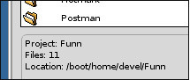
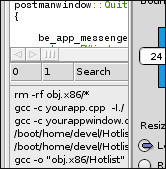
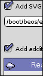
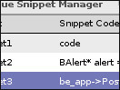
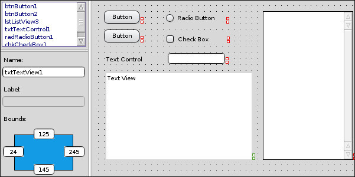
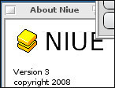

|
Support Haiku:
code
or
donate.
|
||||

|
||||
| Have a look | :: |
Try it yourself | :: |
Niue @ HaikuWare |
|
To have no errors
Would be life without meaning Niue is an easy to use but powerful development environment for BeOS/haiku. Or, Niue is an application for BeOS/Haiku which makes it easy to develop applications and manage development projects on your system. Niue comes with a syntax styled code editor, a visual interface designer and handy tools to help you create build and export your application. Applications are built using the freely available GNU tools. Projects A Niue project isn't really a project. It's simply a folder containing a bunch of source code files, a Makefile and maybe some resources. Projects are opened by selecting their folder from File->Open Project'. There is also another, more exotic, way of opening projects. Instead op choosing File->Open Project, you can also go for File->Browse Projects. Now Niue finds all folders containing a makefile in the location you provide. Be careful though, there is no guarantee that these are all projects. It's up to you to decide if the results are what you are looking for. To add files to your project choose Project->Add Files To Project. All files you select are copied from their original location to your project folder. To remove a file from your project to right-click it and select 'Remove from project'. The file is moved from your project folder to Trash so it's easy to recover mistakes.  Besides removing files there is more you can do to a file with a right-click. Most options will speak for itself but there one that deserves some explanation. Sometimes it might happen that a file is sorted under Resources while you known that it is actually source code. When this happens you can choose 'Mark as source' to, well, mark it as source. While you are working on a project it is also up to you to keep the makefile up to date. By choosing Make, Make Clean or Run you tell Niue to make your project by the makefile's rules. Note that because of that files that you add to your project are not automatically included in your build. To help you keeping track of your actions, Niue displays files that are unsaved in red. Make sure to save your changes before you build your project. Exporting  When you have a project open you can choose Project->Export Application to create a distribution of your application. You are asked for a name for the executable binary an optionally you can add a SVG icon or additional files. Hitting the Export button will ask your where to save your distro and creates a zip-file containing the executable binary, with the SVG if provided, and the additional files if provided.Usually you'll want to upload this zip-file and make it available for download. Snippets Niue snippets will be familiar for those who have used Microsoft Visual Studio and they work pretty much the same. Right-click anywhere in the source code to bring up the snippets menu. Choosing a snippet will insert its code at the cursor location. Although there are some built-in snippets, you can get most out of them by adding your own. Added snippets are saved in your config folder so if you don't manually delete them they are never lost. To add snippets open the 'Snippet Manager'. As for the snippet code, line breaks are not allowed yet, please also remember that all snippets must have unique names. Visual Designer Niue Visual Designer is a tool to help you with the layout of controls. Usage should be pretty straightforward, select a control from the right, click on the grid to add and an use the input fields on the left to fine tune the control. Additionally you can align all the dropped elements and use the (square-red) handles to move and resize controls. By clicking the 'Generate Code' button Niue will write some lines of code for you to use in your project.To start a new project with the layout you've created, choose 'Start Project'. A new project will be created with the chosen element in the main view.  Only the most common controls are available right now, more will be added later. In the distant future the Visual Designer will also be able to load designs from code and interact with Niue. Credits Niue wouldn't have been possible without the freely available source code of the following projects: Yate, by Chris Blackbourne, EZLauncher, by Robert Polic, File-To-Resource, by Gabriele Biffi, The Mover class, by Sylvian Tertois, The IconMenu class, by Rene Gollent, The BarberPole class, by Micheal Pfeiffer, And everyone working on, or supporting Haiku. Because Niue owes so much to those above I want to be sure that future developers can always rely on the code base of Niue and therefore the Niue sources are always available by request. © 2008 Tako Lansbergen, © 2013 waddlesplash |
||||